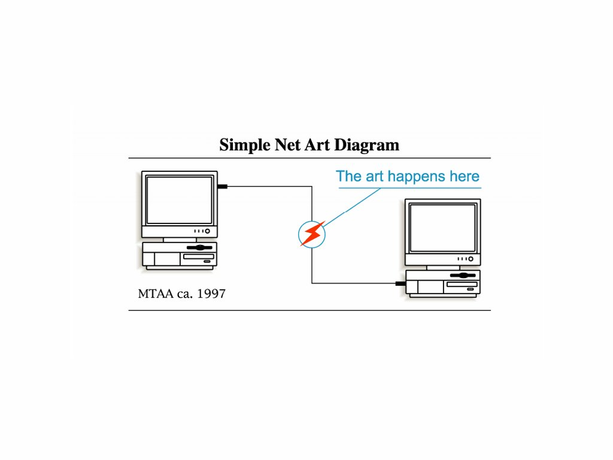

5 Inspiring Web Artists
Auriea Harvey's Rhizome page
Harvey's projects are very intresting to me because they seem like a collage of the horror genre. It's images of spirits or ghosts, motion-blur and intresting patterns.

MTAA's Web page
The projects MTAA does seem like an instruction manual, it's simplistic and something I could see on a poster or in Ikea.

Julien Demeuzois's Rhizome web page
As someone who plays videogames I really like Demeuzois's projects. They feel like something you would play in the 80's on a hot day.

Brian Mackern's Web page
The projects are very strange but in a good way, they seem like something you could just create for fun. I also like the Variable=Random(ART) because it looks like bubbles.

Marcus Vinicius Fainer Bastos's Rhizome page
Bastros's projects are like the icons you see when looking into the code or files on your laptop or phone. That or a glitch, I also the randomness of Weblandscape0.